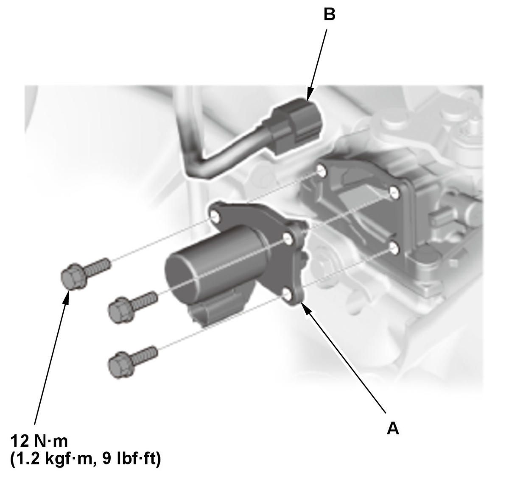

Reverse Lockout Solenoid Disassembly and Reassembly (Except K20C1 (M/T)): Reassembly
WARNING: This page is about a different variant/trim than selected.
- Reverse Lockout Solenoid - Reassemble
1. Install the pin (A), the select lock return spring (C), and select lock cam B. - Reverse Lockout Solenoid - Install
1. Clean any dirt and oil from the sealing surface of the reverse lockout solenoid and the shift arm cover. 2. Apply liquid gasket (P/N 08718-0003, 08718-0004, or 08718-0009) evenly to the shift arm cover mating surface of the reverse lockout solenoid. Install the component within 5 minutes of applying the liquid gasket.
NOTE: If too much time has passed after applying the liquid gasket, remove the old liquid gasket and residue, then reapply new liquid gasket.

Courtesy of HONDA, U.S.A., INC.3. Install the reverse lockout solenoid (A). 4. Connect the connector (B).
- Air Cleaner - Install